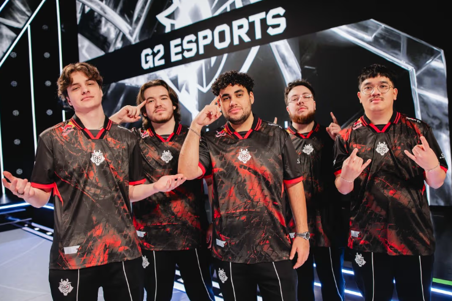

G2 Esports - Roster y Último Partido
Fecha: 3 de marzo de 2025
Resumen: G2 Esports continúa siendo una de las potencias en el mundo de VALORANT con su impresionante roster. En su último partido, G2 dominó a Liquid en una serie convincente, consolidándose como uno de los favoritos para los próximos torneos internacionales.
Roster Actual
El roster de G2 Esports está compuesto por jugadores como Valyn, Jawgemo, Trent, JonahP y Leaf, quienes están destacando por su cohesión y su gran habilidad táctica.
Rendimiento en el Último Partido
G2 logró una victoria rotunda frente a Team Liquid con un rendimiento impresionante, dejando claro que son uno de los equipos más sólidos en la competición internacional. Su último triunfo reafirma su estatus de favoritos para los próximos grandes torneos.